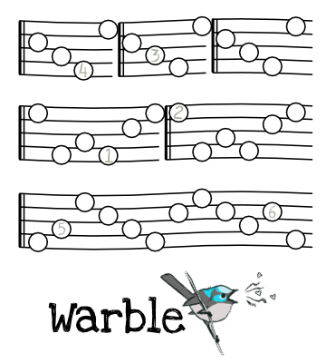
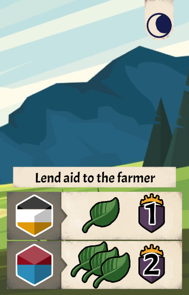

I've been wondering about putting my roll-and-write Tumblebee up on Kickstarter. Lately there seem to be a lot of projects that avoid the expensive shipping and manufacturing delays by going the print and play route. I would want to clean it up a bit more, and perhaps pair it with a second game, to add value. So I began thinking about a second simple roll-and-write, themed around birds (for the 'birds and bees' reference). It's been cooking for a few weeks, but I had an idea a few days ago about using the die values on a line to create 'increasing' and 'decreasing' steps; much like you would see in sheet music. So the game idea is you are a bird singing a mating song to three different other birds, who each have their preferred song structure. Roll 3 dice; 2 numbers have to be put into your song, and the other has to be used to build your nest. Score a point for each correct interval, plus a point for each interval if the whole song was flawless.
The issue, after a basic test of this concept, is that it's effectively a matching game (trying to get the numbers to match the preset pitches). And I don't know if that is compelling enough. I currently have a musical stave with an empty circle on a random line each 'beat', to represent the pitch of the song increasing or decreasing. Players are trying to add a number that is either higher or lower than the previous number, based on where the empty circle is.
If I remove the empty circles and let players create their own melodies, then there isn't enough structure and it might feel overwhelming or directionless.
I'll continue to test and think on it.

Here's one that's been baking since 2016. The Knightmouse character has been around since 2009, a project for my animation degree. He's been a jumping-off point for many small projects, because he is such a blank-slate protagonist. But there-in lies the issue - the characterisation doesn't force me into a box. Knightmouse has no built-in hooks or limitations, the design space is literally "medieval action and adventure". My first attempts at a design really aren't worth talking about, before I had much experience with modern table top games. However, recent ideas revolve around bag-building (giving the feeling of character improvement and getting stronger) and shared deck-building, where players are actively changing a central deck of events by the choices they make. However, I can't focus the gameplay because I don't have a clear end-game condition in mind. What should the gameplay be pushing the players toward? I can very clearly visualise the early turns, but I cannot pinpoint what the final turn or two of the game will involve.
So, to clarify this in my mind, this weeks focus will be honing in on the exact player experience I'm seeking, and building a framework around that for the rest of the game to sit in.
After 5 days of work, I have a solid foundation. The central deck contains events that give the players an assortment of fun stuff (ingredients, XP, VP, unique effects) generally at the cost of some stamina from their bag/pool. I have a leveling system that gives them more stamina, a day/night system that both refreshes the event deck and allows the players the opportunity to restore and improve their discarded stamina. I also have a loose idea for an endgame trigger that revolves around the deck being reshuffled a number of times. The gameplay loop is really simple (basically picking a card from the tableau), but the surrounding mechanisms and interactions being quite evocative of the action/adventure theme are exactly what I'm aiming for. I'm feeling successful so far.
The next step is planning a list of event cards - I want at least 40 to get a feel for how specific benefits should be distributed throughout. Then a MVI playtest will be possible, to assess how the basic interactions hold up.